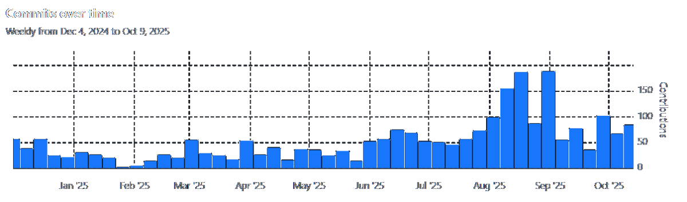
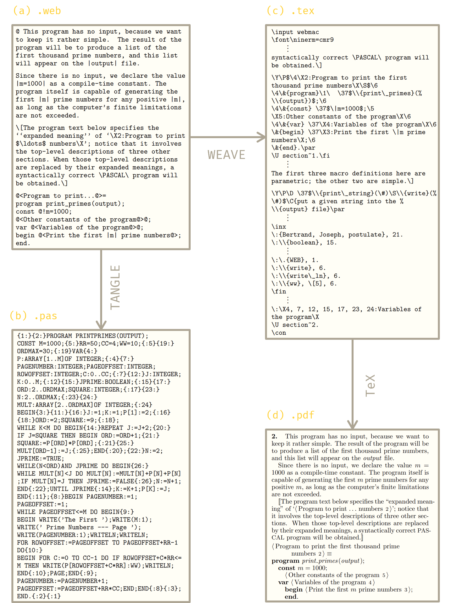
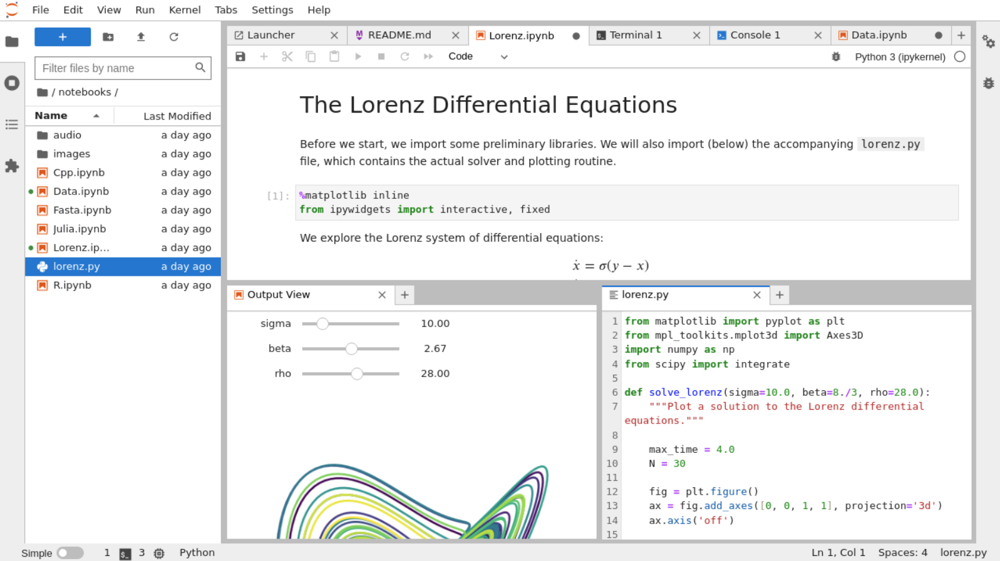
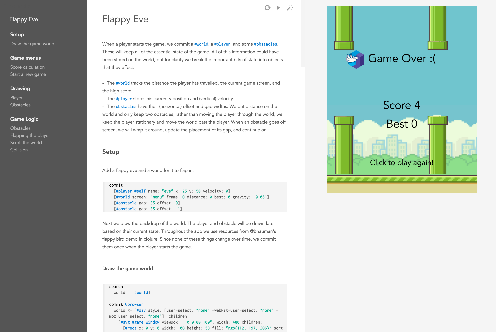
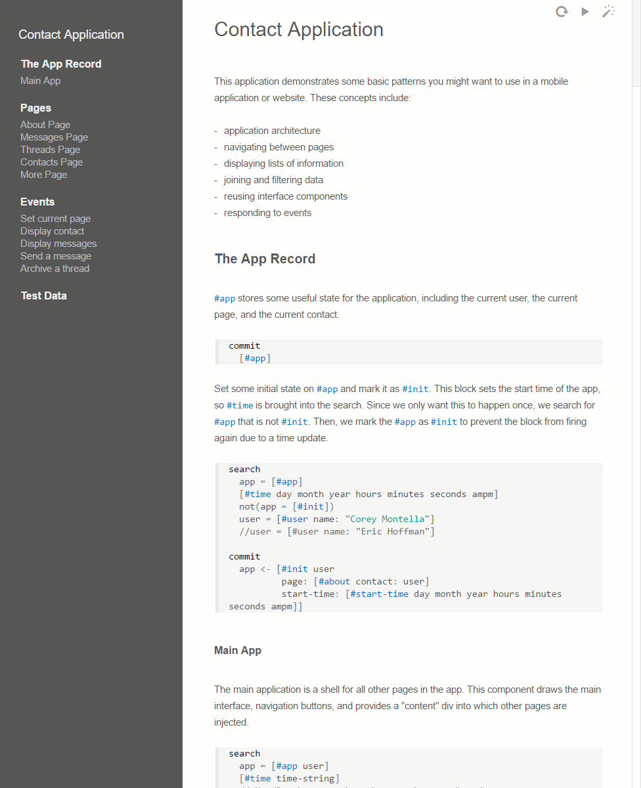
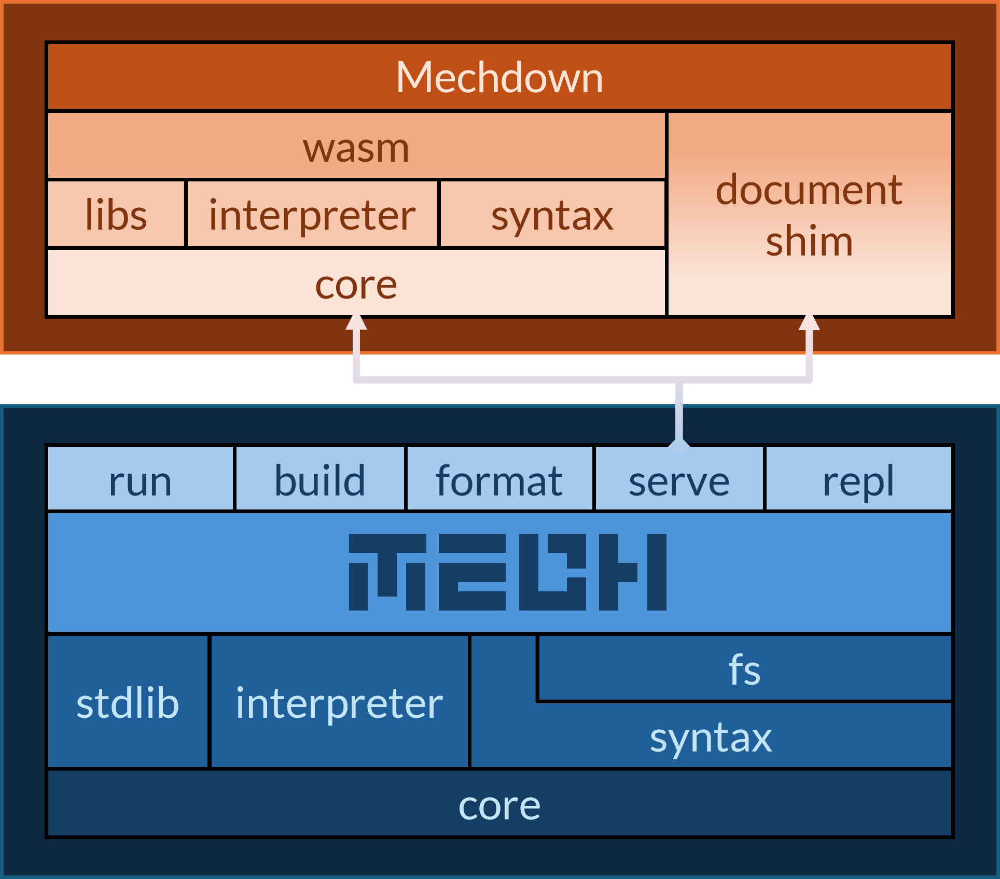

Fall 2025 Progress Report - Mechdown Beta
Mech is a language for data-oriented programming, with matrix operations as first-class citizens. It is designed for working with datasets, building numerical simulations, and running interactive applications. Use cases include user interfaces, games, embedded systems, and especially robotics.
In this post, we review our progress on Mech so far this year, focusing on the beta implementation of the Mechdown literate programming tool, including its design and implementation. This document itself is written in Mechdown and served on the Mech platform, so everything you see here demonstrates the system's capabilities.
If you're not familiar with Mech, here is a quick taste with as many features as we can demo in 7LOC:
A row vector of numbers from 1 to 10
Convert x into mutable string vec
Indices for multiples of 2
Indices for multiples of 3
Set multiples of 2 to "✨"
Set multiples of 3 to "🐝"
Set multiples of both to "✨🐝"
This solution to the classic "FizzBuzz" problem is expressed in Mech using vector operations. It generates a vector of numbers from 1 to 10, converts it to a string vector, then replaces multiples of 2 with ✨, multiples of 3 with 🐝, and multiples of both with ✨🐝. This code block is configured to display the value of the last line as output.
Click on the variables and you'll see their values echoed in the REPL to the right (if the REPL is closed, you'll see a modal popup, which can be dismissed by clicking on it. You can open the REPL by pressing `).
Mech is a matrix-oriented language like Matlab, Julia, or NumPy, meaning operators like % and == are defined to work on entire arrays at once. Logical indexing is then used to select and update specific elements of the out vector based on the truth of corresponding elements in the index vectors ix2 and ix3.
The Mech code out[ix2&&ix3] = "✨🐝" is equivalent to the following imperative pseudocode:
for i in 1..=10 {
if (ix2[i] && ix[i]) == 0 {
out[i] = "✨🐝"
}
}
Work in progress documentation is available at docs.mech-lang.org, and the source code is on GitHub.
Anyway, you might want to grab a snack -- this is probably the longest and most significant update to Mech we've posted to date!
By The Numbers
Let's begin with a quick history of Mech:
After some preliminary work in 2014, the first real implementation of Mech commenced in 2018 after the conclusion of the Eve project. Since then, Mech has grown and evolved through several versions representing over 9000 commits (9274 as of the writing of this post) from 14 contributors, most of whom are students working on Mech with me as part of their capstone projects.

A history of commits to Mech since the last update was posted. Mech is developed on an "academic calendar", meaning most development happens over the Summer and Winter months, then slows down during the Fall and Spring semesters.
Mech Alpha (v0.0.1 through v0.0.6) represented the initial experiments in language design, exploring niche debugging tools like time-travel debugging and reflecting runtime state in a live editor. Documentation and a working demonstration for Mech Alpha are still available.
Mech v0.1 followed this effort as a refinement of the initial ideas, and also fleshed out the feature set to include a GUI library, plotting tools, a distributed runtime, and even a capability permissions system. A demonstration of this version can be found at the Have You Tried Rubbing A Database On It (HYTRADBOI) 2022 Conference, and code is available on the v0.1 branch of the Mech repo, but there is no documentation for this version.
Today we are reporting progress on Mech v0.2, currently wrapping up development and nearing an actual release. Work this cycle focused on nailing down a data specification language for Mech, building out the standard library, and creating useful tools for working with Mech code. The first release of v0.2 was on July 16 2024, and this version has received >2900 commits so far. Today we will be covering progress as of v0.2.66-beta.
As it stands, Mech v0.2 represents only about 1/3 of the full Mech platform -- just the data specification layer -- and is not yet Turing complete.
Although Mech has been in active development for a while now, it's been mostly experimentation, so the code base is not mature in the least. That means if you're planning to use Mech,
bugs abound, here be dragons, use at your own risk, etc.
If you find any bugs, please file an issue.
With that out of the way, let's take a look at what's new in v0.2...
Mechdown Beta
Mechdown is a literate programming tool and documentation generator built around the Mech programming language. Mechdown is the first tool we are delievering that uses Mech as a backend, and is itself a useful thing irrespective of Mech being unfinished -- at its most basic level it's a tool like Hugo. But, it uses Mech (which is intended to be a general purpose language, not just for document scripting) as a scripting and code execution engine (although it theoretically works with JavaScript and any other WASM-compliable language), so Mechdown documents can be dynamic. Its purpose is to be a tool for creating live programs and documents, with potential as a [1] replacement for scientific papers and reports. This blog post is written entirely in Mechdown and serves to demonstrate its capabilities.
Mechdown is a dialect of Markdown[2], with unambiguous syntax, and common extensions such as tables, and diagrams. What's unique about Mechdown is executable code blocks powered by Mech, which has been purpose-built for integration with Mechdown. So you get all the nice markup features of Markdown like section headings, lists, and links, plus the ability to bring running code to your documents with Mech scripts.
For example, this Mech code computes the matrix product of two vectors, and assigns it to the variable s:
This block is attached to a Mech interpreter, that parses and executes the code to find the value of s[1] is s[1]. With this feature Mech becomes a first-class literate programming language for creating live documents, reports, and presentations.
If you want to jump to an extended example of a Mech program written in Mechdown, check out the N-body Simulation or the Extended Kalman Filter examples in the Mech documentation.
Mechdown is unique because nearly all literate systems (WEB, Org, Jupyter, R Markdown, Literate Haskell, etc.) rely on an external layer of markup to separate code from prose; whereas with Mechdown, prose and Mech code can be intermixed without the need for code fences or other explicit delimiters. Systems like Smalltalk or Forth get close, but they rely on runtime interpretation where you choose what to execute, or undefined words are ignored. There's no real parsing intelligence distinguishing prose from code in the source itself as with Mechdown.
In building Mechdown alongside Mech, we've created a system that:
lets prose and code share the same source file, and is readable (not encoded in JSON or language expressions)
doesn't use any explicit or implicit boundary markers (although they are available and provide unqiue semantics)
executes code blocks automatically, not via manual selection (although manual execution is supported too)
In the rest of this document, we will review the history of literate programming tools and languages (
§3
), then talk about the design and implementation of Mechdown as it exists today (
§4
), followed by an explanation of the various tools implemented so far to work with this new system (
§5
). Finally, we will conclude with details on the timeline of the upcoming v0.2 release, and also a sneak peek at what is coming in v0.3 (
§6
).
A Brief History of Literate Programming
Literate programming is a programming paradigm introduced by Donald Knuth in 1983, when he released the WEB literate programming system as a way to improve the readability and maintainability of code1. Knuth was especially frustrated with the limitations of traditional programming languages, which required programmers to write code in a compiler-imposed order that didn't make sense for the narrative of explanatory works like books and academic papers. His goal was to write code in a way that was more natural and readable to express his ideas more clearly. Knuth's insight was that programs should be written primarily for human understanding, not just machine execution.
In his words:
The practitioner of literate programming can be regarded as an essayist, whose main concern is with exposition and excellence of style. Such an author ... strives for a program that is comprehensible because its concepts have been introduced in an order that is best for human understanding, using a mixture of formal and informal methods that reinforce each other [3].
For example, some languages of that time required programmers to declare all variables before any of them were used, like early Pascal, Fortran, and Algol. This was not a great feature ergonomically, because it forced the programmer to think about the program structure in a way that was not natural. But it was enforced because it was convenient for compiler developers to know all the variables up front, so they could allocate memory and set up symbol tables before parsing the rest of the program.

"Literate Programming" by Donald Knuth, 1992 [4]
But as a programmer, you would rather declare a variable where it makes sense in the program, to allow the reader to see how it is used in context, rather than be referred to a distant section of the text for its definition. It shouldn't matter how the compiler developer feels about it, because whereas the compiler devloper's frustration is felt only at the time the compiler is written, the user's frustration is felt every time a program in the language is written or read, which occurs much more frequently.
Some of this can (and has) been addressed through better language design and tooling; modern languages are far more flexible about where variables can be declared, and language servers can help with symbol resolution and document navigation. But sometimes other elements, like functions, modules, and classes, are still restricted by the compiler's expectations about program structure. Some languages even restrict how files can be named and organized. So the underlying point remains: the compiler shouldn't dictate the order in which we write our programs simply because a different order happens to align better with the machine's internal representation.
While Knuth's tooling was cutting-edge in 1983, his work only just began to reveal the potential of literate programming. Let's take a look at some of the different implementations of literate programming systems over the years, and how modern literate programming systems are used today.
WEB (1983)
WEB was the foundational tool for literate programming developed by Knuth in the 80s. It was designed to interleave Pascal code with documentation formatted by TeX, a typesetting tool of Knuth's own creation[5].
WEB consisted of three components:
Source File (
.web) - This is the document written by the programmer. It contains both documentation and code, interwoven in sections. Each section is like a small story fragment that may include prose followed by code, which can reference or expand other sections by an identifier.TANGLE - This tool processes the
.webfile and extracts the code portions, assembling them into proper Pascal source code. The name reflects the idea of untangling the narrative to produce compilable code. It resolves named code sections into an order appropriate for compilation, and outputs a.pasfile, which can be compiled by a Pascal compiler.WEAVE - This tool turns the
.webfile into a typeset document using TeX. It organizes and formats both the prose and the code with syntax highlighting, cross-references, and indexing, generating high-quality documentation -- typically a.texfile for further processing into a PDF.

The example program from Knuth's paper "Literate Programming". (a) The literate program is written in .web format. (b) The TANGLE process transforms it into a .pas PASCAL program. (c) The WEAVE process transforms the .web file into a .tex document, which is then processed into a PDF by TeX (d).
This worked well enough for Knuth to write his famous book series "The Art of Computer Programming" [6] using WEB, which is a testament to the power of literate programming as a tool for producing high-quality technical writing.
But literate programming didn't really take the world by storm, and it remained a niche practice for decades. There are a few reasons for this:
It was hard to learn. Not only did you have to learn a programming language, but you also had to learn TeX, and the WEB markup system that composes the two. This is a lot to ask of new users, and the value proposition wasn't exactly clear to them at the time.
For Knuth, he had a very clear motive to write in a literate style; he was writing a book on programming, so interleaving code and prose makes sense for his use case. But not many programs make their way to the typesetter, so the incentive to learn the system was low for anyone not looking to publish a book on programming. Which is most programmers.
There was no real integration between the code and the documentation. Once the code was tangled out into a Pascal file, there was no way to keep the two in sync. If you changed the code, you had to remember to update the
.webmanually, which is error-prone and tedious.
Although the concept was great, the actual tooling left a lot on the table in terms of usability and practicality. To fully take advantage of literate programming, new tools and languages that integrated with those tools would be needed.
Emacs Org Mode (2003)
Notebook programming is the most recent incarnation of literate programming, which builds on the tangle/weave paradigm. The idea is to interleave code and prose by restricting the code to discrete blocks or "cells" that can be executed independently, and display the result of the execution next to the block. This allows for a more interactive experience, where the user can run code snippets and see the results immediately, without having to compile and run an entire program.
Notebooks are very close to what Mechdown is, but Mechdown improves on them in important ways. Let's first look at some existing notebook programming systems, and then we will see how Mechdown builds on their ideas.
Emacs Org Mode [7] is a system for organizing notes, tasks, and code within the Emacs text editor. Because Emacs is an editor, Org Mode supports a wide variety of programming languages. To handle the different semantics of these languages in a consistent way, code in Org Mode is written within code blocks delimited by special markers. Each code block can be executed independently, and its results can be captured and displayed in the document. Since the blocks are clearly delineated, users can also write freeform prose in a markup language similar to Markdown.
Here's an example of an Org Mode document with a code block:
* Data Analysis
** Load Data
#+BEGIN_SRC python :results output
import pandas as pd
data = pd.read_csv("data.csv")
data.head()
#+END_SRC
** Plot Data
#+BEGIN_SRC python :results file
import matplotlib.pyplot as plt
plt.plot(data['date'], data['temperature'])
plt.savefig("plot.png")
#+END_SRC
[[./plot.png]]
In this example, titled "Data Analysis", there are two sections: "Load Data" and "Plot Data". Each section contains a Python code block. The first block loads data from a CSV file and displays the first few rows, while the second block generates a plot and saves it as an image file. The results of each code block can be displayed directly within the document.
Org Mode adopts WEB's "tangle" and "weave" steps in the form of the :tangle header argument:
In literate programming parlance, documents on creation are woven with code and documentation, and on export, the code is tangled for execution by a computer. Org facilitates weaving and tangling for producing, maintaining, sharing, and exporting literate programming documents. Org provides extensive customization options for extracting source code.
When Org tangles code blocks, it expands, merges, and transforms them. Then Org recomposes them into one or more separate files, as configured through the options. [8]
Here's a gallery of various Org Mode examples showcasing its versatility.
Jupyter Notebook (2015)
Although literate programming is a language-agnostic concept, the design of some languages make them more suitable for notebook-style environments than others. For example, languages such as Python, R, and Julia are designed for interactive use in a REPL environment, which makes them a natural fit for notebook environments like Jupyter, popular in data science and scientific computing. In contrast, ahead-of-time (AOT) compiled languages like C++ can be used in notebooks, but this often requires adapting the language to a more dynamic style by restricting certain features, such as static linking.
In contrast to Org Mode, Jupyter is not used by writing a specialized markup language in plaintext. Instead, users create their projects within the Jupyter IDE, which functions like a WYSIWYG environment for notebooks.

Jupyter Notebook is an interactive computing environment that allows users to create and share documents containing live code, equations, visualizations, and narrative text. This particular notebook demonstrates the Lorenz differential equations using Python, renders rich text such as equations, displays a graph of the program's output, and allows the user to interact with it using UI form elements like sliders and buttons.[9].
This editor saves files as a JSON datastructure for easy parsing and transmission. For example, the schema begins with a heading that specifies the language kernel and project metadata:
{
"metadata": {
"kernel_info": {
# if kernel_info is defined, its name field is required.
"name": "the name of the kernel"
},
"language_info": {
# if language_info is defined, its name field is required.
"name": "the programming language of the kernel",
"version": "the version of the language",
"codemirror_mode": "The name of the codemirror mode to use [optional]",
},
},
"nbformat": 4,
"nbformat_minor": 0,
"cells": [
# list of cell dictionaries, see below
],
}
Then it defines cells and code as an array of strings:
{
"cell_type": "code",
"execution_count": 1,
"metadata": {
"collapsed": false,
"scrolled": false
},
"source": [
"import math\n",
"radius = 5\n",
"area = math.pi * radius ** 2\n",
"print(f'The area of a circle with radius {radius} is {area:.2f}')"
],
"outputs": [
{
"output_type": "stream",
"name": "stdout",
"text": [
"The area of a circle with radius 5 is 78.54\n"
]
}
]
}
Eve (2016)
Eve [10] was a project I worked on from 2015 to 2018 with Chris Granger, Rob Attorri, Jamie Brandon, Josh Cole, and Eric Hoffman. Eve was the follow-up idea Chris developed after his work on Light Table. Although many wanted him to continue working on Light Table, he realized that the features he wanted to implement for the editor were limited by the design of JavaScript. Consequently, he pivoted to the Eve project to fully explore what an IDE could be if it were built around a language designed without the restrictions of JavaScript.

The Eve notebook editor, which was written mostly in JavaScript and TypeScript. It features a WYSIWYG prose editor integrated directly with the Eve language. The code output is rendered to the right of the code, and an outline of the source is rendered to the left. Various debugging tools exist within the editor and can be used while the program is running. The application pictured is FlappyEve. Visiting the link opens the Eve-hosted editor, which runs entirely in the client's browser along with the Eve language runtime.
The prototype we released was a notebook programming environment based on a Prolog-like database language, Eve. It maintains the concept of code blocks embedded in Markdown-like prose, but the underlying language is not imperative -- it is declarative and relational2. This addressed one of the trickiest aspects of notebook programming: notebook cells can be evaluated in any order, whereas most languages assume imperative semantics. Eve solved this by using a query engine that recursively evaluated the program until a fixed point was reached, allowing cells to be evaluated in any order as needed.
For example, in the "FlappyEve" game, the first code block commits several records (facts) to the program database defining the game world:
commit [#player #self name: "flappy" x: 25 y: 50 velocity: 0] [#world screen: "menu" frame: 0 distance: 0 best: 0 gravity: -0.061] [#obstacle gap: 55 offset: 0] [#obstacle gap: 35 offset: -1]
A later block searches for the #player record and draws it to the @browser database (which is configured to render to a canvas element in the DOM) at its x and y coordinates:
search @session @browser svg = [#game-window] player = [#player x y] bind @browser sprite = [#image player | width: 10 height: 10 href: "http://i.imgur.com/sp68LtM.gif" sort: 8] sprite.x := x - 5 sprite.y := y - 5 svg.children += sprite
The @ sigil denotes a database, and the # sigil denotes a tagged record. Therefore
search @session @browser svg = [#game-window]
will search the @session database for a record tagged #game-window, and bind it to the variable svg. Later svg.children += sprite binds a new record to the children field of the svg record in the @browser database.
Because Eve is reactive, when the y value changes on the #player record (which, in this game, occurs every tick of the game timer), all dependent values are automatically recomputed. This allows the programmer to focus solely on defining data associations rather than managing control flow.

A demonstration of reordering code blocks in Eve. Building the language atop a database allows the user to query the program for related code blocks, and extract them into a new view.
This language design opened up all kinds of new possibilities for literate programming, many of which are demoed on this launch video from 2016. One feature in particular was the inspector, which allowed the user to turn their cursor into a probe that could provide information as to the provenance (the origin and history) of any value in the program. This made it easy to understand how values were computed, and trace bugs back to their source. Another feature related to literate programming was the ability to restructure the narrative of the program by querying it e.g. the user could ask for all code related to the generation of a particular UI element, and Eve would extract only those sections and present it in a new view. This solved the problem of having to write the code in narrative form, as the user could create any narrative they wanted, or even construct many narratives on the same codebase (e.g. one for designers, one for testers, one for developers, etc.).
We even had a chat interface usable from a phone, as well as a natural language interface where you could ask it questions posed as English sentences about the program state.
Unfortunately, the Eve project concluded in 2018 due to funding constraints, and the codebase was archived. However, many of the ideas explored in Eve have influenced subsequent projects, including Mech and Mechdown.
Mechdown Alpha (2019)
After the Eve project concluded, I returned to working on Mech, which I had originally started in 2014 (I learned about Eve late in 2014 and applied to work on the project based on my experience with early Mech). The 2014 implementation was not very far along, so I scrapped it and wrote the first version of the current Mech lineage in 2018. By 2019, the first version of Mechdown was implemented in Mech v0.0.2-alpha. In this section, I will review v0.0.6-alpha, which is still running today.

Shown here is Mech Alpha, featuring the first version of Mechdown. The pictured program can be accessed at the archived Mech Alpha documentation. The left panel contains a table of contents for the code in the central panel. On the right is the rendered output of the program. Clicking on a variable shows its value in a modal window, which updates live with the program. At the bottom of the screen are playback controls that can pause the program and scrub through its value history, which is stored as a database. [11]
The layout for the editor was inspired by what we had done with Eve, retaining the same three-pane design: a table of contents on the left, code in the center, and output on the right. Mech, however, had key differences from Eve. Principally, it abandoned the relational model in favor of a more MATLAB-like, matrix-based semantics. We still preserved the concept of orderless execution by using dataflow analysis to determine dependencies between variables and executing them in an order that satisfied those dependencies.
For example, this (legacy) Mech code defines a #balls table, where each row represents a ball in the simulation, and each column represents a property of the ball:
# Bouncing Balls
Define the environment
#ball = [|x y vx vy |
10 10 20 0]
This block would render as an h1, followed by a p, and then a code block defining the #ball table with columns x, y, vx, and vy, and a single row with initial values. Notice that the code block does not need to be delimited by a fence—this is because Mechdown and Mech were designed together, so the prose parser recognizes Mech syntax and knows how to parse it. Likewise, Mech syntax is designed not to conflict with any Mechdown markup. This allows the two languages to coexist, solving the tangle/weave problem found in Web/Org mode, and enabling code to be backed by a content-oriented document rather than a data-oriented JSON format like Jupyter.
Then in a separate block of code elsewhere in the program, we react to the ball bouncing off the game area:
~ #ball.y -- execute this block only when #ball.y changes
iy = #ball.y > #boundary.height -- find all balls below the boundary
#ball.y{iy} := #boundary.height -- clamp their y position to the boundary
#ball.vy{iy} := -#ball.vy * 0.80 -- reverse their velocity with some energy loss
The variables prefixed with the # sigil are not tags, as in Eve, but global tables that can be accessed from any block in the program. Dataflow analysis determines that #ball.y depends on #boundary.height, so when the boundary height changes, the ball positions are automatically updated.
Mechdown Alpha supported live Mech code execution, variable inspection, and time-travel debugging, allowing users to pause the program and scrub through its history to observe how variables changed over time. This was a valuable feature for understanding complex programs and debugging Heisenbugs3.
In terms of implementation, the Mech Alpha parser and runtime were written in Rust and compiled to wasm32 for execution in the browser. The Mechdown editor was written in JavaScript and interfaced with the Mech runtime via the wasmbindgen toolchain, which enables interoperation between Rust and JavaScript, and provides an API for accessing the DOM from Rust.
The alpha implementation of Mechdown culminated in a digital paper written in Mechdown, presented at the Live2019 workshop [12].
Other Systems
R Markdown [13] brought executable documents to the R ecosystem, combining R code with Markdown prose to create dynamic reports and presentations. The goal is to help researchers and data scientists produce reproducible analyses that integrate code, results, and narrative in a single document. R code is fenced within {r} code blocks, and the R Markdown toolchain can execute the code and embed the results directly into the document. This is similar to Mechdown in that it merges code and prose.
However, although the documents could be executed, a large-scale study of nearly 200,000 R Markdown documents in public code repositories found that 64% were not executable. The primary causes were missing libraries, missing data, and incorrect code [14]. This highlights an opportunity for Mechdown to improve on R Markdown by providing a more integrated environment where code and data are bundled together, along with tools to help programmers ensure documents remain executable.
Marimo [15] is a notebook environment for Python, similar to Jupyter, but backed by a native Python document rather than a JSON schema. Unlike Jupyter, Marimo is a reactive notebook -- whenever a cell that defines a global variable is run, Marimo automatically recaclulates every cell that depeneds on it -- which places it more in line with how Mechdown. However, the Python code is structured using @app.cell blocks, which contain both Python code and Markdown. As a result, Marimo documents are not easily readable without the accompanying tooling, unlike to Mechdown.
Pluto [16] is trying to be to Julia what Marimo is to Python. Here, Pluto uses md tags to denote Markdown blocks, and regular Julia code for code blocks. Like Marimo and Mechdown, the execution model is reactive. However, the design of the Pluto system requires the user to provision a Julia environment to execute the code, whether it be local or on the cloud. Either way, the user has to pay the cost of significant setup time (for me over a minute on my machine), which makes the experience less than seamless. Mech works without the use of any server-side components by compiling the runtime to WebAssembly, so the entire Mechdown toolchain can run client-side in their browser.
Typst [17] is a new typesetting system that aims to be a modern alternative to $LaTeX$. Like Mechdown, it is written in Rust, providing excellent performance compared to typical $LaTeX$ systems, which are known for long compile times. Typst offers a live-coding experience, where changes are reflected immediately in the rendered document. It also supports reactive documents with a custom dialect, though this is not intended to be a full programming language like Mech. Instead, it enables simple computations within documents, such as calculating values for tables and plots.
Clerk [18] is a live notebook system for Clojure that integrates code, prose, and rich visualizations in a single environment. Here are some examples. It allows Clojure code to be embedded in Markdown or namespace files, evaluates code live, and provides built-in viewers for tables, plots, TeX, HTML, and custom data. Computation is cached and paginated for performance, and users can extend the system with custom viewers or transformations. While Clerk shares Mechdown's focus on reactive, literate programming, it differs in that it relies on the host language semantics of Clojure, rather than offering custom semantics for literate programming.
Given thse various literate programming tools, Mechdown is well-positioned in this space. With Mech, we have already designed a language that is well suited for data-oriented programming. Other systems rely on existing languages that were not designed for notebook programming, requiring compromises in syntax and semantics to fit the notebook model. Mechdown, in contrast, is built from the ground up to support literate programming, with a syntax that is unambiguous and easy to read and write without specialized tools.
Design and Implementation
One of the key design philosophies behind Mech's syntax is similar to Markdown: it should be easy to read and write in plain text form, without requiring specialized editors or tools. This makes it accessible to a wide range of users and facilitates collaboration and version control using standard text-based tools. In designing Mechdown, we incorporated the best features of Markdown and extended them with elements from dialects like GHFM (GitHub Flavored Markdown). In doing so, we made Markdown unambiguous, since its original specification left room for interpretation between different parsers. As a result, although Mechdown is inspired by Markdown, it does not aim to maintain compatibility with Markdown or the CommonMark specification.
As of v0.2, Mechdown has matured into a fully functional documentation generator and literate programming tool. In this section, we will discuss the design and implementation of Mechdown as it exists today. The document you are currently reading demonstrates Mechdown by example, so you have already experienced many of its features first-hand, such as:
Auto-generated table of contents
Auto-numbered figures with captions
References, links, and footnotes
Inline Mech code and code blocks
Abstract and quotation blocks
Ordered and unordered list
Mechdown's grammar is defined in the Mech Programming Platform Specification [19]:
We use an extension of EBNF defined in the Mech specification. Here, ws0 denotes zero or more whitespace characters, ? denotes an optional element, + denotes one or more repetitions, * denotes zero or more repetitions, and ¬ denotes negation.
The key to how Mechdown integrates with Mech comes down to whitespace; Mechdown is whitespace-sensitive, meaning that whitespace is significant in the syntax and structure of the language. For example, consider a nested list:
- Item
- Subitem 1
- Subsubitem
- Subitem 2
This list is whitespace-sensitive because the indentation level determines the hierarchy of the list items. Most languages cannot parse this correctly without some kind of code fence or comment block to indicate where the code begins and ends. This is because most mainstream programming languages are not whitespace-sensitive (Python being a notable exception), so parsers often strip out whitespace before parsing the code. Any whitespace that needs to be preserved, such as in strings or comments, can be handled in the lexer before parsing; these elements are delimited by quotes or comment markers, so the full parser machinery is not required to recognize them. Stripping out whitespace simplifies the grammar and, in turn, the parser implementation.
In Mechdown, we do not have to place prose or code behind any fences (although code fences are available), so we must fully parse the entire document, including whitespace. This requires significantly more work in defining the grammar, as we must account for all the ways whitespace can appear in the document. However, the advantage is that code and prose are now fully integrated. For example, we can define Matrix code blocks like this:
This is a matrix definition:
y := 7 ^ 2
x := 2 * [1 2 4
5 6 y]
The third element of `x` is {x[3]}.
That said, Mech is not fully whitespace-sensitive; most whitespace-sensitive grammar nodes offer an alternative using semicolons and commas to delimit statements, so the above code block could also be written inline like this:
y:=7 ^ 2;x:=2 * [1,2,4;5,6,y]
Mech requires spaces around operators, which allows us to support features like kebab-case and slashes/in/identifiers without ambiguity. We also believe it makes formulas more readable. The commas in the inline form are used to facilitate easier inline writing, since newlines are not available in that context.
Markup Features
In this section, we'll showcase some additional markup features of Mechdown. You have already seen elements such as the abstract block at the start of this document, images, figure captions, and more. Now, let's explore a few more features.
Section Titles
There are 6 levels of titles: the document title, section titles, and 4 levels of sub-section titles.
Title ======== 1. Section Title ---------------- (1.1) Sub Section Title (1.1.1) Sub Sub Section Title
The table of contents (TOC) is generated from these titles and can be styled with CSS. The opening, closing, and highlighting of sections is handled by JavaScript and CSS, demonstrating how Mech and JavaScript can interoperate in this new version of Mech.
Paragraphs
The heart and soul of any literate programming document is the humble paragraph. Mechdown supports all the standard paragraph features you would expect from a modern markup language, including:
Text Markup
Bold Text
Italic Text
Underline Text
Strikethough TextHighlighted Text
Inline Elements
Inline code blocksinline-mech:=syntax+"highlighting"
Link Elements
These elements can be added wherever paragraphs are used, including in sections, lists, figure captions, table cells, and even Mech code comments. The last case is particularly useful:
z:=7^2+3*4-5/2-- Evaluates to z
Here, the runtime value of z is computed and displayed inline in the comment, providing a convenient way to document code behavior without running the program separately. It's like println(), but even more powerful because you don't need to execute separate statements.
Lists
Both ordered and unordered lists are supported, including nested lists. Here is a list of some features of lists:
1. Bullet lists
- One
- Two
- Three
2. Custom bullets
-(🦜) Four
-(🏴☠️) Five
-(🐷) Six
3. Numbered lists
1. One
2. Two
3. Three
4. Custom start number
7. Seven
8. Eight
9. Nine
5. Check lists
-[ ] Task One
-[x] Task Two
-[ ] Task Three
Which will render as:
Bullet lists
One
Two
Three
Custom bullets
Four
Five
Six
Numbered lists
One
Two
Three
Custom start number
Seven
Eight
Nine
Check lists
Task One
Task Two
Task Three
The last feature is notable because the checkboxes are interactive when rendered. This opens the possibility of creating interactive documents with Mechdown, where users can check off tasks and the document can respond according to Mech code defined within it. However, this feature will have to wait for v0.3.
There are many more features—if you'd like the full rundown, check out the specification.
Tables
Tables are not a feature of vanilla Markdown, but they are widely supported in various Markdown dialects, such as GitHub Flavored Markdown (GHFM) [21]. Mechdown includes support for tables, with a syntax similar to GHFM.
Columns can be aligned in one of three ways:
Left-aligned:
:--or--Right-aligned:
--:Center-aligned:
:--:
The body of a table is defined using rows of text separated by pipes. Each row can contain any number of columns, and the number of columns in each row must match the number of columns in the header. The right column demonstrates inline Mech code executing within table cells:
| Align Left | Align Center | Align Right |
|:------------|:------------:|------------:|
| One | Four | {1 * 4} |
| Two | Five | {2 * 3} |
| Three | Six | {3 * 6} |
Renders the following table:
Align Left | Align Center | Align Right |
|---|---|---|
One | Four |
|
Two | Five |
|
Three | Six |
|
We call these "Mechdown tables" instead of just "tables" to distinguish them from Mech's native table data structure, which are defined a little differently, and represent values in a Mech program:
q := | x<f32> y<bool> |
| 1 + .2 1 < 2 |
| 1 + .3 3 > 4 |
Which renders as:
x<f32> | y<bool> |
|---|---|
| 1+.2 | 1<2 |
| 1+.3 | 3>4 |
If you'd like to learn more about the table data structure, consult the table docs.
Mech Extensions
I think that even without Mech integration, Mechdown is already a very capable markup language—I already choose it over Markdown for my own purposes. However, the real power comes from Mech integration, so let's explore the Mech-specific features of Mechdown.
Mech Code Blocks
You have already seen a few examples of Mech code blocks in action, but let's take a closer look at the syntax and features of Mech code blocks.
First, the main difference between Mech code blocks and regular code blocks is that there is no need to fence Mech code with backticks or tildes. Mechdown recognizes Mech syntax natively, so any indented block of Mech code is treated as a Mech code block. For example, when you write a:=1+1 on a line by itself, Mechdown knows it is Mech code and parses it accordingly:
a:=1+1This line of code is parsed and executed by the Mech runtime, adding the variable a to the program's global scope with the value a. Syntax highlighting is achieved by traversing the program's AST and mapping AST nodes to HTML elements. This allows the browser inspector to be used to view the parse tree of the code block.
In a later block, we can reference {{a}} and use it in further calculations:
which results in {b}. In terms of parsing, blocks are defined as contiguous lines of Mech code. If we want to include prose within code blocks, we can use actual comments rather than Mechdown paragraphs. For example:
Divide c by a
Semantically, all the code blocks in this section belong to the global program scope. Therefore, c and d being in the same block does not place them in a different scope from a and b defined earlier.
Fenced blocks are also supported, but they differ semantically from non-fenced blocks -- the last line of a fenced block is displayed as the block's output. For example:
```mech e := d ^ 2 ```
Renders as:
In the future, the output will be configurable, allowing us to display all variable values or even custom output defined by the user. This was a feature first explored in Mechdown Alpha.
Inline Mech Code
You can include Mech values in prose paragraphs using inline Mech code, by wrapping Mech expressions in curly braces { and }. For example, {a} is rendered as a in the paragraph because that is the current runtime value. If the value changes, the runtime automatically updates the display in the paragraph, keeping the output in sync with the program state and making the document reactive. When the Mech runtime is not loaded (e.g., the code is saved to a raw .html file and opened directly in a browser), the inline code renders as the original expression, so {a} would appear as a.
It gets better -- we can write arbitrary Mech expressions inline. For example, {a + b} is parsed by the runtime and executed, and when the result is available, it is rendered in place: a+b.
Finally, if we want to parse Mech code without executing it, we can use the inline Mech syntax element denoted by {{}}. This is useful for documentation, where we want to display the code itself rather than its result. For example, {{a + (b * 2)}} renders as a+(b*2).
Sub Interpreters
As a final highlight, Mechdown supports sub-interpreters, which allow code blocks to be executed in isolated environments. This is useful for testing and experimentation, where we want to run code without affecting the global program state. I use sub-interpreters extensively when writing tests and examples for the Mech standard library, so that each example can run independently without interfering with others.
In Mech, once a variable is defined, it cannot be redefined within the same scope. This is not an issue if we use a completely separate interpreter, which is supported with fenced code blocks. For example:
```mech:ex1 x := 10 ```
This creates a block in the ex1 sub-interpreter where {{x}} is defined as 10. In a separate block, we can define {{x}} again in a different sub-interpreter:
```mech:ex2 x := 20 ```
The preceding two blocks render as:
The "FizzBuzz" example at the beginning of this document is defined to run in the mech:fizzbuzz sub-interpreter, so it does not interfere with the rest of the program. We can access its variables by writing other blocks in the same sub-interpreter:
Tooling
Everything you have seen so far in this document was generated using the mech compiler and toolchain, which includes support for Mechdown. There is no separate utility for Mechdown, as it is not really necessary. The toolchain is small and self-contained, so including the rest of Mech with Mechdown is not a burden. Moreover, Mechdown is intended as a gateway into Mech, so we want users to have the full platform readily available when they decide they need fuller programming capabilities in their Mechdown documents than simple scripts.
Mechdown is architected as a frontend and backend. The frontend is responsible for rendering and styling the Mechdown document in the browser; while the backend handles parsing, executing, and updating Mech code. This backend is served to the client as a .wasm binary, enabling full client-side execution, although there is potential to execute code on the server and deliver the results to a connected client via websockets (this was one of the tests we did in Mech v0.1, and we intend to bring that back in v0.4). If the backend is not available, the document falls back to static rendering without any live execution.

Architecture diagram of Mechdown, showing the frontend (top) and backend (bottom) components. The frontend consists of a WebAssembly runtime and a JavaScript shim that interfaces with the browser DOM. The backend is served from the mech tool, which is built on the Mech parser, interpreter, and standard library. The backend serves a .wasm Mech runtime, and a shim .html file to the client. The client uses these to render and evaluate Mechdown documents locally, so there's no latency or server load when executing Mech code.
Fontend
The frontend has two components: a WebAssembly runtime, which is served to the browser, and a JavaScript shim that interfaces the Mech .wasm runtime with the browser DOM.
Because the Mech compiler is written in Rust, it can be compiled to the wasm32 target for execution in the browser. This is important because Mechdown documents are intended to be live, running entirely in the browser without any server-side support. With WebAssembly, the Mech runtime can be shipped to the client, allowing Mech programs to execute entirely client-side. This provides several advantages:
Scalability: Since the Mech runtime runs on the client side, server resources are not consumed when users run Mech programs. This makes it easy to scale to a large number of users without worrying about server load.
Responsiveness: Running Mech programs on the client side allows for a more responsive user experience, as there is no need to wait for server round-trips to execute code and receive results.
Offline support: Because the Mech runtime is shipped to the client, users can run Mech programs even when offline or with a poor internet connection.
The resulting binary is about 1 MB (compressed) for the full Mech runtime, including the parser, interpreter, standard library, and Mechdown formatter. The file size can be reduced to just a few hundred KB by compiling only the parts of the runtime needed for a given document4. We use wasmbindgen along with web-sys and js-sys to interface with the browser DOM. This allows Mech to interoperate with JavaScript as an embedded language, similar to Lua, although additional work is needed to refine the interface.
mech-wasm
mech-wasm depends on mech-syntax and mech-interpreter. mech-syntax is only required if the client needs parsing capabilities; if the client is only executing compiled Mech bytecode, the parser can be omitted, including just the interpreter. This results in a significantly smaller WebAssembly binary.
This component is centered around a data structure called WasmMech, which holds an instance of the Mech interpreter and provides methods to load documents, execute code, and access system values. The WasmMech instance is intended to persist for the lifetime of the document. Here's how it works:
The Mechdown document is first handed to the
WasmMechinstance as either raw source code or precompiled bytecode. If it is source code, it is parsed into an AST and loaded into the interpreter. If it is bytecode, parsing is skipped and the program is loaded directly.init()is called, which adds event listeners and renders the interpreted values into the Mechdown document, including inline values and code block outputs.Optionally, a REPL can be attached to the document. You can see it open to the right of the main content area. This is where general output from the Mechdown document is directed. It can be opened and closed with the
`key. More details are in §5.3.
mech format
The other part of the frontend is an HTML/JavaScript shim, which provides a div with the ID mech-root, another with the ID mech-repl, and a third with the ID mech-toc. The shim also includes a CSS file for styling the document, allowing complete customization. Mechdown handles only the structure and semantics of the document while providing classes and IDs for all nodes, so they can be referenced by the Mech runtime.
This shim is generated by the mech tool using the format command with the --html flag. The formatter takes a .mec source file as input and outputs a .html file containing the rendered Mechdown document. Here's the process:
Parse the source file into an AST.
Start at the root AST node and traverse the tree.
For each node, generate the corresponding HTML element.
For example, here is var()
pub fn var(&mut self, node: &Var) -> String {
let annotation = if let Some(kind) = &node.kind {
self.kind_annotation(&kind.kind)
} else {
"".to_string()
};
let name = &node.name.to_string();
let id = format!("{}:{}",hash_str(&name),self.interpreter_id);
if self.html {
format!("{}{}", id, node.name.to_string(), annotation)
} else {
format!("{}{}", node.name.to_string(), annotation)
}
}
On the variable span, we mark the element as "mech-clickable", registering it with the WASM runtime. It's also given an ID in the format hashed-variable-name:interpreter-id, so when the user clicks the element, the runtime knows which variable in which interpreter it corresponds to.
This HTML tree corresponds to the Mech program x:=1+2. It is attached to the HTML shim at the node mech-content. Each tree node maps to a node in the Mech AST5, with classes indicating the AST node type and the HTML node type reflecting the node's semantics. Nodes representing specific Mech interpreter values are annotated with their value IDs.
Once the HTML tree is built, it's time to finalize the output html document. This consists of taking in the shim, and replacing any templated sections with generated content. For example, the template {{TOC}} will be replaced with the generated table of contents for the document. Mechdown supports various templates including {{STYLESHEET}}, TOC, CONTENT, CODE, and TITLE.
The CODE template is important for executing documents; the document AST is serialized, compressed, and base64-encoded for embedding wherever the CODE template is included. This allows the Webassembly runtime to recover the program AST without reparsing the document, which speeds up loading. In a future version, we'll store only the program bytecode, which will be smaller and even faster to load.
These .html files are static in that they can be opened and viewed without a server or runtime, which keeps them small. To make them live, however, they need to run on a server so the runtime can be loaded. Even so, this approach runs Mechdown entirely on the client side, so no server resources are required to execute Mech programs beyond serving the .html and .wasm files.
Backend - mech serve
In §5.1 we outlined the design and implementation of the frontend, which renders Mechdown documents in the browser. We now turn to the backend, which serves the Mechdown frontend files—including documents, runtime, and assets like images—to clients.
Using the mech tool, we can run the serve command to start a local web server that serves Mechdown documents with live editing. The tool watches source files and automatically recompiles and reloads documents in the browser when changes are detected. The process works like this:
The user runs
mech servefrom the command line, supplying a directory or list of files to serve.A
MechFSfilesystem starts, reading the supplied files to form an in-memory directory tree of the project.MechFShandles the following file types specially:.mec– Mech source.mecb– Mech bytecode.mdoc– Mechdown source (same as.mecbut distinguished for clarity).mpkg– Mech package configuration filesWebsite files:
.html,.htm,.md,.csv,.jsImages:
.png,.jpg,.jpeg,.gif,.svgMech code (source, bytecode, etc.) is compiled immediately, with the resulting bytecode stored in filesystem memory. Website HTML is stored in a map of URI paths to assets.
Mech code is formatted into static
.htmlfiles and stored in the map alongside the other served files. This allows the server to immediately serve a requested.htmlfile without reparsing or reformatting on each request. Alternatively, if the client requests a.mecfile, the server can respond with the corresponding.htmldocument.
MechFSwatches files and folders for changes. When a change is detected, it recompiles the affected document and updates the entry in the server. Subsequent client requests will then receive the updated version immediately.
Previous versions of Mechdown could establish and maintain a long-running WebSocket connection with the server when requesting an HTML file. This enabled real-time communication between client and server, or peer-to-peer with other clients. It isn't implemented in v0.2 yet, but will return in v0.4.
:docs
The final feature we'll cover today is the :docs command in the REPL. Since Mech makes it easy to transmit documents with embedded Mech programs, we can fetch those documents from the internet directly into the browser using the REPL. Try this in the REPL:
:docs math/sin
Or just click this link: :docs math/sin to run the command in the REPL automatically. This fetches the document from the math machine repository, wherever its address is registered in the Mech machine registry. In the future, we might use a dedicated documentation registry like docs.rs. Either way, once the document is fetched, it loads directly into the REPL.
You can see the document rendered as HTML, with all Mech examples running live in sub-interpreters and their results displayed. Running code in sub-interpreters isolates it from the main program, preventing interaction or overwriting of variables, and all memory related to the document is freed when the REPL is cleared. This makes it easy for users to integrate example code into their own programs by copying and pasting, or potentially by importing the document as a Mech package in the future.
What's Next?
Landing v0.2
The v0.2 development cycle will be considered "done" when the following conditions are met:
All current roadmap tasks for
v0.2have reached at least🐤(beta) status.The
v0.2specification and documentation are complete, including the standard library.
Regarding condition 1, the two main work items blocking the release are the language server and the error system. Other tasks need some work, but these two will require the most effort. We anticipate completing v0.2 by the end of the year.
Launching v0.3
We anticipate work on v0.3 will begin early in 2026, although some foundational work has already started. This version will focus on program and package specification, including higher-order functions, control flow, and expanding the Mech compiler toolchain.
Some of this work is already underway in the form of the bytecode compiler and the build system, but these are still in early stages, so we are not including them officially in the v0.2 release.
The major language feature for v0.3 will be the introduction of state machines. We expect this work to take at least a year, targeting completion by the end of 2026 or early 2027.
Here's the broad-view roadmap:
v0.1 - proof of concept system - minimum viable language implementation
v0.2 - data specification - formulas, defining and manipulating data
v0.3 - program specification - functions, modules, state machines, build system
v0.4 - system specification - tools, distributed programs, capabilities
Getting Involved
If you'd like to get involved with the devolopment of Mech, the best way to do that right now is by writing Mech code and filing bug reports. Right now Mech is "Open source closed development" by necessity, but we are almost ready to open the project to outside contributions. We'll have more to say about that in the new year, but until then you can reach out or follow along with the project in the following places:
Discord - for live chat
GitHub - for code and issues
YouTube - for video tutorials
Reddit - for help and general discussion
Mailing List - for dev discussion
Thanks for reading!
Giving credit where it's due, Knuth notes that his system is not entirely new and draws on ideas that were generally circulating at the time. He specifically cites Pierre-Arnoul de Marneffe's Holon system, and mentions that "a somewhat similar system was independently created by Edwin Towster." You can read about Holon programming in a survey compiled by its author [22], which includes, in the foreword, a letter from Knuth complimenting de Marneffe on his system while offering a critical take on its design. Towster's work is detailed in his 1979 paper [23].
Declarative relational programming is a paradigm where the programmer specifies relationships between data rather than explicit control flow. The language runtime determines how to satisfy these relationships, often using techniques like constraint solving or logic inference. This provides a high-level, expressive way to define programs, letting the programmer focus on the "what" rather than the "how." Other relational languages include Prolog and Datalog. SQL claims to be relational, but by allowing duplicate rows, it does not enforce true set semantics and is therefore not strictly relational. In Eve, duplicate rows must be made distinct with an ID; otherwise, they are treated as the same row.
In an early version of Mech, I accidentally introduced a bug in the standard library where certain inputs to the sin function produced an infinite result, causing objects to disappear from the canvas at seemingly random times. Time-travel debugging allowed me to pause the program, rewind to the moment the object vanished, and inspect its state. Discovering that the value was a momentary NaN made the fix straightforward. This bug can still be seen in the first release of Mech alpha when the robot arm is set to just the right angle.
Right now the Mechdown .wasm binary is 30MB uncompressed, <1MB compressed. This is mainly because we are shipping a copy of every function in the standard library, even those not used by the document. Code elimination will reduce this size significantly in future versions. A bigger problem though is we are shipping a parser and the serde serialization framework, which are quite heavy. This will be fixed by including the bytecode compiler and shipping only bytecode to the client, which does not require the parser or serde. We expect this will reduce the size significantly, but for now it's necessarily bloated.
Although not yet implemented, the 1-to-1 correspondence means we could, in principle, parse the HTML document back into a Mech program by walking the HTML tree and reconstructing the Mech AST.
Works Cited
LaTeX Project; Official Website; Online
Markdown; John Gruber's Original Specification. Online
D. E. Knuth, "Literate programming," The Computer Journal, vol. 27, no. 2, pp. 97-111, 1984. Online.
D. E. Knuth; "Literate Programming"; Stanford, CA; Center for the Study of Language and Information; 1992. Online
D. E. Knuth, "The TeXbook"; Reading, MA; Addison-Wesley; 1986. Online
D. E. Knuth; "The Art of Computer Programming", Volumes 1-4; Reading, MA; Addison-Wesley; 1968-2011. Online
Emacs Org Mode; Official Website. Online
Org Mode Documentation - Extracting Source Code. Online
Project Jupyter Documentation. Online
Eve; Official Website. Online
Mech Alpha Documentation; v0.0.6-alpha; 2020. Online
C. Montella; "Mech - A Programming Language for Data Driven, Reactive Systems"; Presented at the LIVE Workshop @ the ACM SIGPLAN conference on Systems, Programming, Languages, and Applications: Software for Humanity (SPLASH); Athens, Greece; 2019. Online
R Markdown; Official Website. Online
M.A. Islam, M. Asaduzzman, S. Wang, "On the Executability of R Markdown Files", in Proceedings of the 21st International Conference on Mining Software Repositories (MSR '24), July 2-3, 2024, Lisbon, Portugal. ACM, New York, NY, USA, 11 pages. Online.
Marimo; Official Website; Online
Pluto.jl; Official Website. Online
Typst; Official Website. Online
M. Kavalar, P. Markovics, J. Rusher; "Clerk: Moldable Live Programming for Clojure";Proceedings of the 7th International Conference on the Art, Science, and Engineering of Programming (Programming '23); Montreal, QC, Canada; September 11-13, 2023. Online
Mechdown; Mech Programming Platform Specification; v0.2-beta; 2025. Online
Mech Programming Language; Official Website. Online
GitHub Flavored Markdown; Specification; Version 0.29-gfm (2019-04-06). Online
P.A. de Marneffe, "Holon Programming: A Survey"; Self Published; December 1973. Online
E. Towster, "A Convention for Explicit Declaration of Environments and Top-Down Refinement of Data"; IEEE Transactions on Software Engineering; vol. SE-5; no. 4; pp. 374-386; July 1979. Online